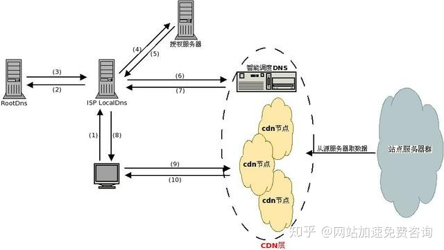
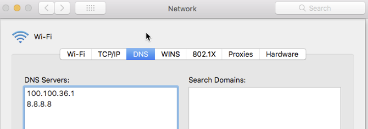
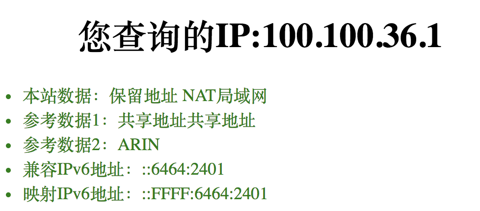
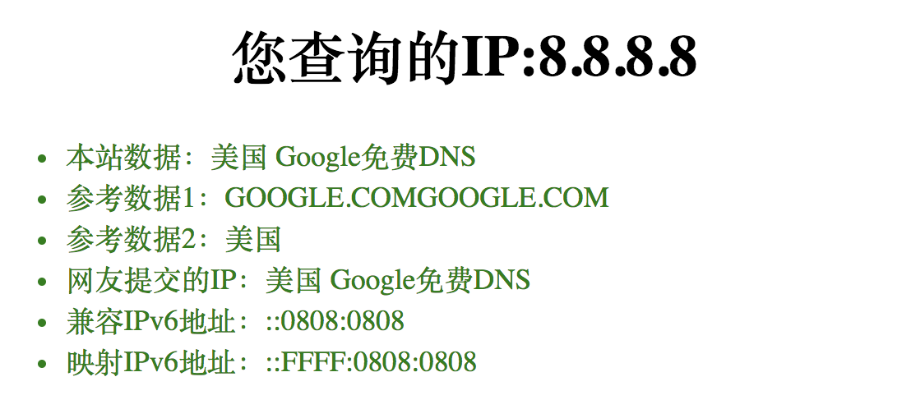
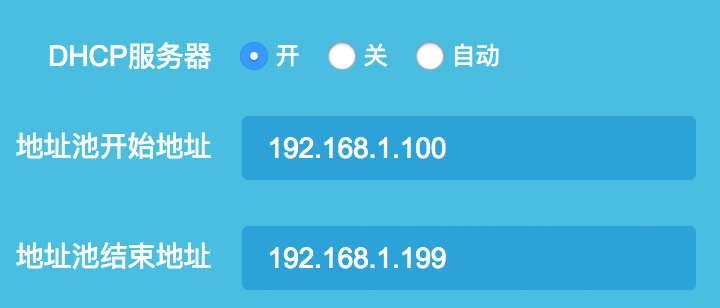
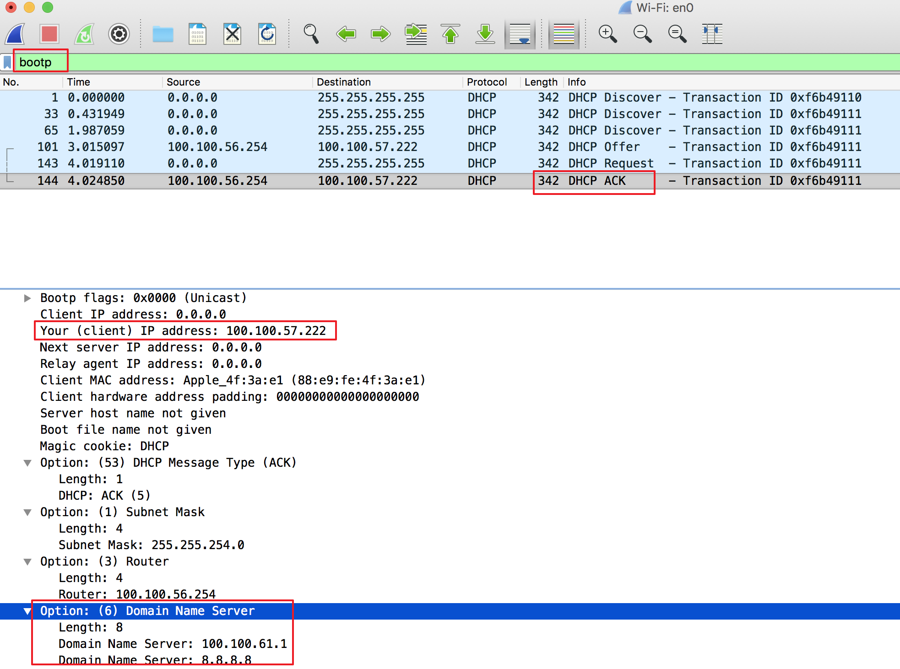
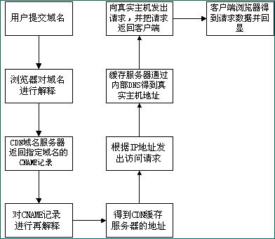

CDN原理
传统的网站访问过程为:
- 用户在浏览器中输入要访问的域名;
- 浏览器向域名解析服务器发出解析请求，获得此域名对应的IP 地址;
- 浏览器利用所得到的IP 地址，向该IP对应的服务器发出访问请求;
- 服务器对此响应，将数据回传至用户浏览器端显示出来。

例子🌰:
- 在chrome中输入www.qiniu.com
- chrome向 DNS server发请求, 解析www.qiniu.com为一个IP地址 (其实就是多了这步)
- chrome知道www.qiniu.com的IP地址后, 访问这个地址
- 七牛 service 收到请求后, 处理完, 返回源IP地址.
然后有几个问题呗:
从Chrome源码看DNS解析过程
（1）浏览器是怎么知道DNS解析服务器，如上图的8.8.8.8这台？
（2）一个域名可以解析成多个IP地址吗，如果只有一个IP地址，在并发量很大的情况下，那台服务器可能会爆？
（3）把域名绑了host之后，是不是就不用域名解析了直接用的本地host指定的IP地址？
（4）域名解析的有效时间为多长，即过了多久后同一个域名需要再次进行解析？
（5）什么是域名解析的A记录、AAAA记录、CNAME记录？
其实域名解析和Chrome没有直接关系,即使是最简单的curl命令也需要进行域名解析
但是我们可以通过Chrome源码来看一下这个过程是怎么样的，并且回答上面的问题。
首先第一个问题，浏览器是怎么知道DNS解析服务器的，在本机的网络设置里面可以看到当前的DNS服务器IP，如我电脑的：
一句话, DHCP分配IP地址的时候就知道了

这个DNS Server是某ISP宽带提供的：

一般宽带服务商都会提供DNS服务器，谷歌还为公众提供了两个免费的DNS服务，分别为8.8.8.8和8.8.4.4，取这两个IP地址是为了容易记住，当你的DNS服务不好用的时候，可以尝试改成这两个。

入网的设备(比如你的mac,前面是mac上的chrome)是怎么获取到这些IP地址的呢？是通过动态主机配置协议(DHCP)，当一台设备连到路由器之后，路由器通过DHCP给它分配一个IP地址，并告诉它DNS服务器，如下路由器的DHCP设置：
这是个例子, 但不是本机的

通过wireshark抓包可以观察到这个过程:
打开wireshark后先断网, 然后再打开网络, 过滤bootp的就是

当我的电脑连上wifi的时候，会发一个DHCP Request的广播，路由器收到这个广播后就会向我的电脑分配一个IP地址并告知DNS服务器。
这个时候系统就有DNS服务器了，Chrome是调res_ninit这个系统函数(Linux)去获取系统的DNS服务器，这个函数是通过读取/etc/resolve.conf这个文件获取DNS：(总之到这里chrome是知道NDS服务器地址的)
1 | 1 # |
search选项的作用是当一个域名不可解析时，就会尝试在后面添加相应的后缀，如ping hello，无法解析就会分别ping hello.DHCP/hello.HOST，结果最后都无法解析。
Chrome在启动的时候根据不同的操作系统去获取DNS服务器配置，然后把它放到DNSConfig的nameservers：
偏题了, 总之懂DHCP就行
那本地域名服务器是个啥???,路由器给你设的DNS是哪个的??(最终值你的ISP,比如电信, 移动)
第一个问题：本地DNS一般是指你电脑上网时IPv4或者IPv6设置中填写的那个DNS。这个有可能是手工指定的或者是DHCP自动分配的。如果你的电脑是直连运营商网络，一般默认设置情况下DNS为DHCP分配到的运营商的服务器地址。如果你的电脑和运营商之间还加了无线或者有线路由，那极有可能路由器本身还内置了一个DNS转发器，这玩意的作用是将发往他所有的DNS请求转发到上层DNS。此时由于路由器本身也接管了下挂电脑的DHCP服务，所以它分配给下面电脑的DNS地址就是它自身，所以你能看到电脑的DNS分配到的可能是192.168.1.1。实际上就是路由器自身，而路由器的DNS转发器将请求转发到上层ISP的DNS。所以这里说DNS是局域网或者是运营商的都可以（因为最终都是转发到运营商，小细节不用纠结）。
再说下DNS的递归和迭代查询:
（1）递归查询
递归查询是一种DNS 服务器的查询模式，在该模式下DNS 服务器接收到客户机请求，必须使用一个准确的查询结果回复客户机。如果DNS 服务器本地没有存储查询DNS 信息，那么该服务器会询问其他服务器，并将返回的查询结果提交给客户机。
（2）迭代查询
DNS 服务器另外一种查询方式为迭代查询，DNS 服务器会向客户机提供其他能够解析查询请求的DNS 服务器地址，当客户机发送查询请求时，DNS 服务器并不直接回复查询结果，而是告诉客户机另一台DNS 服务器地址，客户机再向这台DNS 服务器提交请求，依次循环直到返回查询的结果
为止。
DNS递归查询与迭代查询
【基础服务】简单理解DNS的递归、迭代查询 - DNS（一
与传统访问方式不同，CDN 网络则是在用户和服务器之间增加 Cache 层，将用户的访问请求引导到 Cache 节点而不是服务器源站点，要实现这一目的，主要是通过接管DNS 实现。
使用CDN 缓存后的网站访问过程演变为：
- 用户在浏览器中输入要访问的域名;
- 浏览器向域名解析服务器发出解析请求，由于CDN 对域名解析过程进行了调整，所以用户端一般得到的是该域名对应的 CNAME 记录，此时浏览器需要再次对获得的
CNAME域名进行解析才能得到缓存服务器实际的IP 地址。(这里有2次)- 注：在此过程中 得到
CNAME后,指向的是全局负载均衡DNS解析服务器(第二次解析得到这个服务器IP地址)，然后全局负载均衡DNS 解析服务器会根据用户端的源IP 地址，如地理位置(北京还是上海)、接入网类型(电信还是网通)将用户的访问请求定位到离用户路由最短、位置最近、负载最轻的Cache 节点(缓存服务器)上，实现就近定位。定位优先原则可按位置、可按路由、也可按负载等。这种技术也被称为DNS 重定向
- 注：在此过程中 得到
- 再次解析后浏览器得到该域名CDN 缓存服务器的实际IP 地址，向缓存服务器发出访问请求;
- 缓存服务器根据浏览器提供的域名，通过Cache 内部专用DNS 解析得到此域名源服务器的真实IP 地址，再由缓存服务器向此真实IP 地址提交访问请求;
- 缓存服务器从真实IP 地址得到内容后，一方面在本地进行保存，以备以后使用，另一方面把得到的数据发送到客户端浏览器，完成访问的响应过程;
- 用户端得到由缓存服务器传回的数据后显示出来，至此完成整个域名访问过程。
通过以上分析可以看到，不论是否使用CDN 网络，普通用户客户端设置不需做任何改变，直接使用被加速网站原有域名访问即可。对于要加速的网站，只需修改整个访问过程中的域名解析部分，便能实现透明的网络加速服务。

CDN客户使用CDN的方法：
对于CDN客户来说，不需要改动网站架构，只需要修改自己的DNS解析，设置一个CNAME指向CDN服务商即可。原理在下面会解释
通过上图，我们可以了解到，使用了CDN缓存后的网站的访问过程变为：
- 用户向浏览器提供要访问的域名；
- 浏览器调用域名解析库对域名进行解析，由于CDN对域名解析过程进行了调整，所以解析函数库得到的是该域名对应的CNAME记录（由于现在已经是使用了CDN服务，CNAME为CDN服务商域名），为了得到实际IP地址，浏览器需要再次对获得的CNAME域名进行解析以得到实际的IP地址；在此过程中，使用的全局负载均衡DNS解析，如根据地理位置信息解析对应的IP地址，使得用户能就近访问。（CDN服务来提供最近的机器）
- 此次解析得到CDN缓存服务器的IP地址，浏览器在得到实际的IP地址以后，向缓存服务器发出访问请求；
- 缓存服务器根据浏览器提供的要访问的域名，通过Cache内部专用DNS解析得到此域名的实际IP地址，再由缓存服务器向此实际IP地址提交访问请求；
- 缓存服务器从实际IP地址得得到内容以后，一方面在本地进行保存，以备以后使用，二方面把获取的数据返回给客户端，完成数据服务过程；
- 客户端得到由缓存服务器返回的数据以后显示出来并完成整个浏览的数据请求过程。
除了CND外有啥技术呢,就是是如何进行调度和进行定位的?
3种: DNS 调度、HTTP 302 调度，还有一种使用 HTTP 进行的 DNS 调度策略。
DNS 调度
肯定很多人好奇是如何进行调度和进行定位的？其实也是通过 LDNS(local DNS) 的具体地址来进行的，如上图所示。
假设网民是一个北京客户，那他所使用的 DNS 服务器去做递归的时会访问到CDN厂商的 GLB（Global Load Balance），它可以看到所访问的域名请求是来自于哪个 LDNS，根据一般人的使用习惯，网民所在位置和 LDNS 所在位置是一样的，因此 GLB 可以间接知道网民来自什么位置。
以上图为例，假如网民是一个北京联通的用户，它使用的 LDNS 地址也是北京联通的，而 LDNS 访问 GLB 也是北京联通的，则 GLB 则认为网民的位置在北京联通，那么会分配一个北京联通的 CDN 服务器地址给 LDNS，LDNS 将http:www.a.com解析出的 IP 地址返回给最终网民，那么在以后网民浏览器发起请求的时候，都会直接与北京联通的 CDN 节点进行流量通信，从而达到了加速的目的。
从这个调度理论上看，我们可以不难发现一个问题，就是重点标注出的“根据一般人的使用习惯”。假设网民所使用的 LDNS 地址和他自己在同一个区域，调度才有可能是准确的（后续篇章会重点描述为什么是“有可能”）。
但是举个例子来说，如果网民是北京联通的用户，但他却偏要使用深圳电信的 LDNS，LDNS 出口也同样是深圳电信的 IP 地址，那么 GLB 会误判网民位于深圳电信，分配给网民的 CDN 服务器也都是深圳电信的，后续网民会从北京联通访问到深圳电信，不但没加速，可能反而降速了。
HTTP 302 调度
如前文所述，由于用户使用习惯或一些其他原因，通过 LDNS 调度有可能是不准确的，因此又出现了另一种调度方式，HTTP 302 调度。
原理很简单，无论网民最初拿到的 IP 地址是否是正确的，但最终都是要和这个 IP 地址的 CDN 服务器通信的，因此 CDN 服务器可以在这时知道网民的真实地址（DNS 调度时只能间接知道网民地址，虽然 EDNS-Client-Subnet 技术可以解决问题，但尚未大规模使用）。
HTTP 协议中有一个特殊的返回状态：302。在 HTTP 服务器返回 302 状态码时，可以携带一个新的 URL（使用的是正确 IP），浏览器在拿到 302 返回状态码时，会提取其中新的 URL 地址发起请求，这样就可以做到重新调度了。
使用 HTTP 进行的 DNS 调度策略
那 CDN 是如何将用户的流量引入到 CDN 网络中的呢？重点诶 怎么接管的
在未做 CDN 时，我们访问某个域名，直接拿到的是一个真实的服务器 IP 地址，这个显示 IP 地址的 DNS 记录信息叫 A记录
当业务需要接入到 CDN 时，用户只需调整自己的 DNS 配置信息，将 A 记录改为 CNAME 记录，将内容改为 CDN 厂商所提供的接入域名即可。
cache服务器
参考
CDN加速原理
深度剖析：CDN内容分发网络技术原理
CDN的基本原理和基础架构
图解基于 HTTPS 的 DNS, 安全性
CDN工作原理
《CDN 之我见》系列一：原理篇（由来、调度）666
《CDN 之我见》系列二：原理篇（缓存、安全）
《CDN 之我见》系列三：详解篇（网络优化）